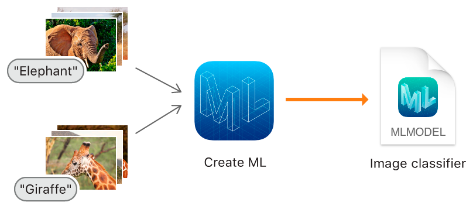
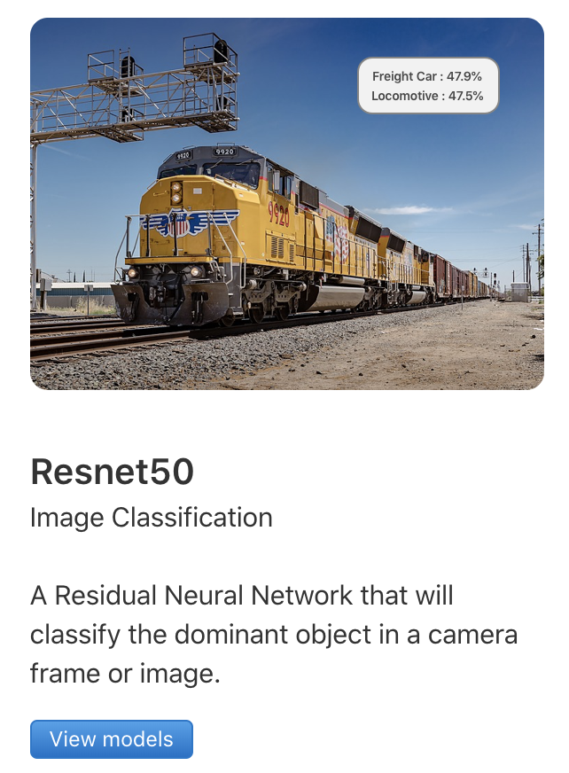
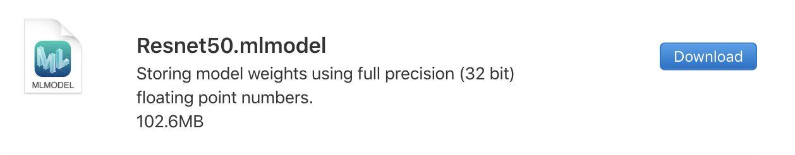
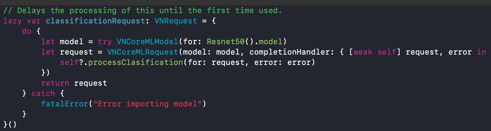
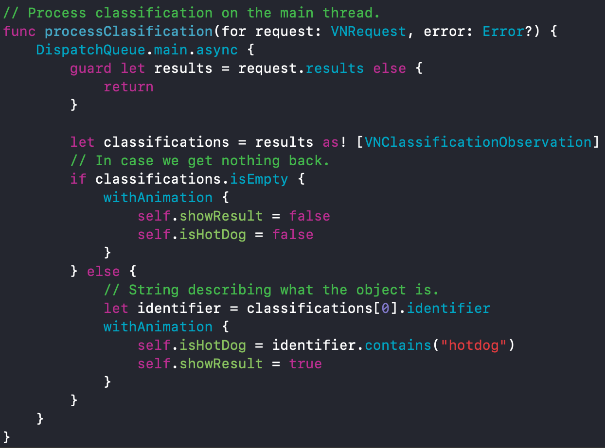

Hotdog or Not-dog
Kan man redde Norge med pølser?
Presentert av
Silje Totland & Kudakwashe K. Chambwe

Teknologier og konsepter
Hvordan appen ble lagd?
Swift 5

- Open Source programmeringspråk (5.0) fra Apple.
- Utvikle for macOS, iOS, watchOS & tvOS
- Typesikkert - "Safe by design"
- Bygger på (Objective-C, Python, Ruby, Rust etc. )
- Fokus på effektivitet, sikkerhet og enkelt å lære seg.
- Bygd som et førstegansspråk - lite rom for feil.
Xcode 11

- Utviklerprogramvare (11.1.) til Apple.
- IDE i macOS for macOS, iOS, watchOS & tvOS.
- Støtter Swift, C, Objective-C, Pyhton, Ruby etc.

Viktige konsepter
Machine Learning (ML)
- Spesialisering innen AI.
- Datamaskinen skal lære seg og ta valg ut i fra store mengder data.
- "Learning on the go".
- Målet - lære seg selv automatisk, og predikere basert på input.
- ML er bygd på data => God data = God model.

Create ML
- Rammeverk for å lage modeller i Swift & Xcode.
- Trene modeller til å gjenkjenne for eks. hotdogs.
- Integreres inn i appen med Core ML.
Core ML
- Rammeverk for å integrere modeller Apper.
- Uniform måte å representere modeller.
- API for appen for re-trening, fin-justere modeller (på app!)
Hvorfor trenger vi Core ML?
Telefoner har begrenset ressurser! (RAM, ytelse, strøm etc.)
- Optimaliserer ressursbruken og ytelsen.
- Begrenser avhengighet av nettv rk.
- Sørger for at brukerdata forblir på telefonen. ("What happens in app..")
Maskinlæring i app
Modellen
 Hvordan gjøre kall?
Hvordan prosessere resultatet?
Send oss bilder! 📸

Straks klar for demo! ⏱
AirDrop: "Kuda-Bouvet (43612)"
Slack: #pølsebilder2019 Hva mer kan vi gjøre med maskinlæring i app?
ML x Helse 💊
- ML + diagnose = fremtiden!
- Forenkle og tilgjengeligjøre behandling av sykdommer.
- Et helsesystem er luksus mange steder i verden.
- Brukstilfeller:
- Predikere og detektere kreft
- Diagnose av hjertesykdommer
- Tilpasse behandling av pasienter basert på data
Takk for oss!
Spørsmål? 😊

Redd liv - send inn din avføring! 💩
https://seed.com/poop/